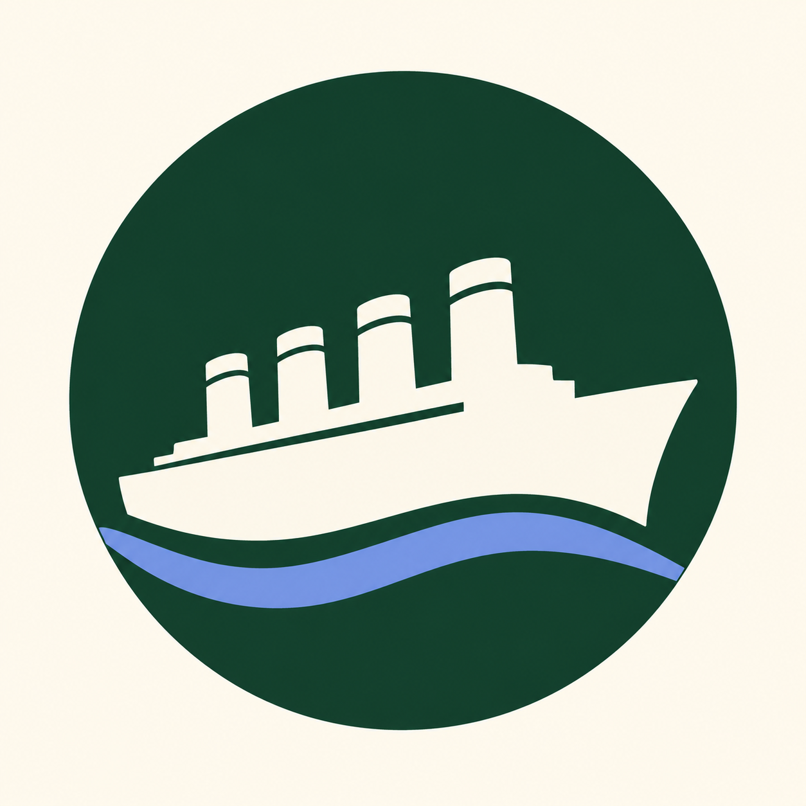

Collaboration revealed new connections
Working across subjects gave teachers new ideas and made them more aware of opportunities to connect science and history in their teaching.

RememberingExploring how teachers, researchers and museum educators can connect science, history and local places through curriculum development.
Three insights from the team’s qualitative study of teacher collaboration
Working across subjects gave teachers new ideas and made them more aware of opportunities to connect science and history in their teaching.
Working within curriculum structures and practical constraints, teachers brought science and history together across a shared unit. The individual lessons remained largely focused on one subject.
The museum visit and project discussions prompted teachers to reconsider Titanic as a human tragedy, and the need to teach it with respect and sensitivity.
Based on Park, Shaby & Newman, Science & Education (2025). The study involved seven teachers and two museum educators.
Wonyong Park, Neta Shaby & Rachele Newman
Rachele Newman & Wonyong Park
Wonyong Park · PDF
The ASE 2024 presentation reports that participants noticed more connections across subjects and reflected on the sensitivity needed when teaching a disaster.
It also explores local history as a setting for science learning and collaborative curriculum development as a form of professional learning.
The Remembering Titanic Project
Wonyong Park, Neta Shaby & Rachele Newman
ASE Annual Conference · 6 January 2024
University of Northampton
Explore the professional development sessions and meet the project contributors.